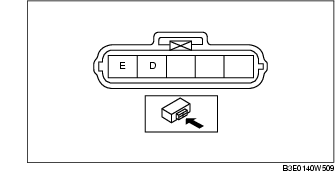
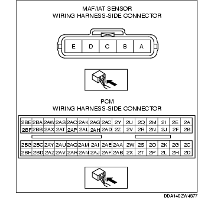

Intake air temperature (IAT) sensor inspection [ZY]
- • Before performing the following inspection, make sure to follow the procedure as indicated in the troubleshooting flowchart. (See Troubleshooting Procedure.)
Resistance Inspection
1. Disconnect the MAF/IAT sensor connector.
2. Verify that the resistance between terminals D and E is within the specification.

- • If not within the specification, replace the MAF/IAT sensor. (See MASS AIR FLOW (MAF)/INTAKE AIR TEMPERATURE (IAT) SENSOR REMOVAL/INSTALLATION [ZY].)
- • If the monitor item condition/specification (reference) is not within the specification, even though there is no malfunction, perform the "Circuit Open/Short Inspection".
IAT sensor resistance
IAT sensor characteristics graph (reference)

Circuit Open/Short Inspection
1. Remove the PCM connector cover.
2. Disconnect the PCM connector. (See INTAKE-AIR SYSTEM REMOVAL/INSTALLATION [ZY].)
3. Inspect the following wiring harness for open or short circuit (Continuity inspection).

Open circuit
- • If there is no continuity, there is an open circuit. Repair or replace the wiring harness.
- - MAF/IAT sensor terminal D and PCM terminal 2R
- - MAF/IAT sensor terminal E and PCM terminal 2Q
Short circuit
- • If there is continuity, there is a short circuit. Repair or replace the wiring harness.
- - MAF/IAT sensor terminal D and power supply
- - MAF/IAT sensor terminal D and body GND
- - MAF/IAT sensor terminal E and power supply